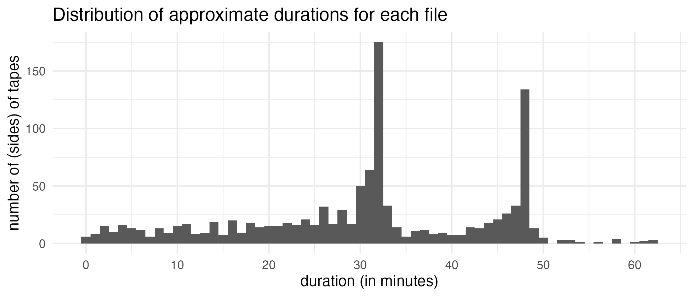
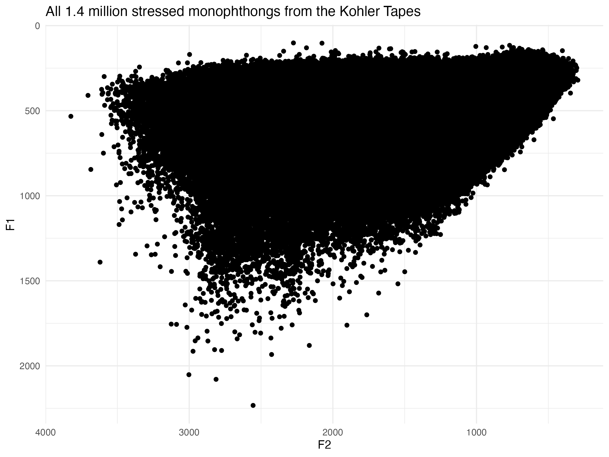

library(tidyverse)
library(joeyr)
library(geomtextpath)I am ecstatic to report that I have now have my Kohler Tapes collection processed! In this post, I’ll give an update on how I was able to process so much data. I’ll also give a really quick demonstration of how to use new-fave and I’ll show some of the very first vowel plots from this dataset, even as I see them!
Background
I’ve given some explanations of the Kohler Tapes collection here, here, and here, so I won’t give a full history of the processing here. But, in January 2018, I met Norm Kohler in Heber, Utah. When he was a middle school teacher there in the 80s and 90s, he asked his students interview their grandparents or some other older person in town as part of a local history unit. He collected 1200 tapes and intended to write a compilation of some of these oral narratives. He unfortunately never did and after his passing, the tapes fell into the custody of the Wasatch Historical Society. They knew I was interested in the tapes, so they got into contact and in 2021, I finally got the tapes.
Over the next few months, I carefully photographed and cataloged the 751 tapes. BYU’s Office of Digital Humanities digitized them, and I learned I had 631 hours of audio from 806 interviewees from 1986 to 2001. Thanks to a John Topham and Susan Redd Butler BYU Faculty Research Award from the Charles Redd Center for Western Studies, I hired an RA to listen to the first few minutes of each tape to write down any demographic information she could gather. She was then able to find over half the people in a genealogy database, which we used to fill out the rest of the metadata. With that, I learned that the birth years were from 1892 to 1953 and most people were from Wasatch County.
Transcription
With that metadata filled out, I had to start the arduous task of transcribing all of these tapes. The problem is it was simply too much for me to do. It took me 172 hours of work to transcribe about 46½ hours of audio for my dissertation. At that rate, it would take me 2,334 hours to do all of these tapes. Even when I was highly motivated during my dissertation transcription, I couldn’t do more than about two hours of work a day without burning out, so if I plan on just two hours a day, it’d end up taking me 1,167 work days, or 233 work weeks, or about 5 years. Two hours a day for five years. No way.
Well, I thought maybe I could hire some students to move things along and divide the labor. I’ve found that student transcribers are typically a bit slower, so based on previous work I supervised, I calculated that it’d take a team of about 14 student workers two years to get it all done. Not to mention the roughly $100,000 I’d need to pay them. I don’t foresee myself securing a grant that big or managing a lab that involved for a while. So intimidated by the amount of audio, the tapes sat untranscribed for a couple years.
Then, about a year ago, a bright new student expressed interest in the project. So applied for an received an Annaley Naegle Redd Assistantship, also awarded by the Redd Center. That paid for that student to begin transcribing a few key tapes. I’ve already mentioned that I was interested in Wallsburg, so we selected a few tapes from there and from Heber to be the first ones to analyze.
Well so then in Fall 2024 I attended a talk by a PhD student in computer science who has a background in linguistics. The talk was basically, “Here’s all the cool stuff that linguists can do with AI.” I’ve already tried using Whisper to transcribe some of these tapes with some success. But most of what my RA had been doing for transcription was correcting those AI-generated transcriptions, and most of that time was adding back in the speech errors and filled pauses that Whisper didn’t include. When I spoke to the CS student presenter about this he said, it would certainly be feasible to use AI to transcribe the rest of tapes.
So, over the next several months, the CS student started working on this.1 At first, we tried fine-tuning Whisper. He said with about 10 hours of manually transcribed audio from a wide variety of tapes, that’d be enough to get Whisper to perform better on this collection, namely the audio quality, the variety of English, and the speech errors. So, my RA transcribed a random 10 minutes from numerous tapes and we used that train Whisper.
1 I insisted on him teaching me how to do it so I wouldn’t be so reliant on him, but he basically said, “with all due respect, it would take you a long time to learn how to do this, and I can do this while watching Netflix. It would just be easier if I did it.” Fair enough! Hooray for collaborations!
In January 2025, we discovered that it wasn’t doing as well as we had hoped. But, the CS student heard about a model called CrisperWhisper. It’s a fine-tuned version of Whisper that claims to transcribe every spoken word exactly as is, including fillers, pauses, stutters, and false starts. Perfect! So, the CS student started playing with it and we found that the results were quite good! There is some nuance and complexity that is involved in getting this to work, but I’ll explain more of that another time. The point is, we were now ready to start transcribing all the audio.
Over the next six weeks or so, the CS student used BYU’s supercomputer to transcribe the tapes. It took a while because 1) it is a complex task, 2) this is a lot of audio to work with, and 3) other tasks sometimes took priority so we were often bumped down the processing queue. But he got it done!
The next step for the student was to turn those transcriptions into a format that is suitable for me, namely a Praat TextGrid. What underlies this though was extensive checking to make sure it did a good job. This took most of that semester, partly because this is a back-burner project for this student and I had a busy time teaching so I didn’t have much time to help.
But on May 22, 2025, I finally got my first copy of the TextGrids! There are still some issues to work out, like correcting some things, making sure boundaries don’t overlap, converting numerals to text, and most importantly, speaker diarization. But, I’m super excited to have these transcriptions finally! I can now say there are approximately 4.7 million words of transcribed audio in this collection.
Forced Alignment
While the CS student’s work is mostly done, sociophoneticians know that this is just the beginning of the pipeline of data processing. My next task was to use the Montreal Forced Aligner to take those utterance-level transcriptions and turn them into word- and phoneme-level transcriptions.
My first step was to rethink how I had been running MFA. Normally, I use a custom Praat script to move the files to the MFA folder and clean them up along the way, like removing things that I know will slow MFA down. Once I run MFA, I then have a post-processing script to move them back and to some other cleaning up. This is a one-file-at-a-time kind of task, and while that’s fine for all my projects so far, it was not going to work for this one. I have about 1,184 files (751 tapes, many of which have content on side B). And since I know the transcriptions I have are just a first pass, I’ll need to run these again at some point (perhaps multiple times). This means that I really needed to find a way to run them all at once.
Fortunately, MFA can handle many files at the same time. And all the transcriptions were in one folder already. However, I ran into some trouble and I’m not sure what was wrong. Perhaps it’s just my unfamiliarity with MFA, but I could not get it to run on all the files at once.2 What I eventually did was move all the files to their respective folders and generate the command line prompt to run each one. I then dumped all of those commands into a shell script and had MFA run all of them in succession. (I wrote an R script to automate this entire process.) I’ll probably do a blog post about it at some point because I think it worked quite well. So, after a few days of working on this, I eventually was able to process all the files with the click of a button. And 36 hours later, the forced alignment was done!
2 One issue was that it considered all the tapes a single speaker, even though the file names were different. I even tried changing the tier names in each file and that didn’t help. for whatever reason, this means that only a few words in each file were transcribed.
Formant Extraction
The next step is to extract formants. I wanted to try new-fave because 1) it’s new, 2) it looks fantastic, 3) it’s the only automated way I know of to do all the files. Fortunately, getting that script set up was straightforward. After my success with MFA, I decided to use the same approach and generate a shell script that processes each file one at a time. I couldn’t use FAVE’s built-in function for handling lots of files because the file structure for this project wasn’t conducive to it, and that’s fine. Again, I’ll probably do a tutorial on this soon because it worked really well.
The tricky part was just the size of the collection. I’ve learned that reading and writing too much on an external harddrive can cause problems. These files were in some cloud storage, which worked for a while, but it caused some memory problems partway through because files weren’t downloading. So I moved the entire collection to my computer’s harddrive and continued from there. It was moving slowly, but it was moving.
It took about five days of non-stop processing on my computer, but I’m thrilled to see that as of 2:04pm today, all the files were processed. I am writing this at 2:11pm, so I’m still in the euphoria of having the data finished. So, come with me as I process the files for the first time.
First look
I’ll start by loading tidyverse and my own package that has some data processing functions.
Just yesterday, Joe Fruehwald posted about the output of new-fave. Let’s start with the point data. I’ll use Sys.glob and to fetch the pathnames of all the files I want to read in, and then I’ll use map to actually read them in. Unfortunately, I won’t be able to show the actual data here because Github had some problems with me reading in and processing this much data on the fly.
raw_points_data <- tibble(path = Sys.glob("/Users/joeystan/Desktop/KohlerTapes/audio/*/FAVE/*_points.csv")) |>
mutate(data = map(path, read_csv, show_col_types = FALSE)) |>
select(-path) |>
unnest(data)This combined spreadsheet has a whopping 2.5 million rows of vowel data. That’s… a lot. 😅
I’m going to go ahead and recode FAVE’s coding scheme into something I’m more familiar with. Just for this first pass.
fave_code_allophones <- function(.df) {
.df |>
mutate(phoneme = fct_collapse(label,
"FLEECE" = c("iy", "iyF"),
"KIT" = "i",
"FACE" = c("ey", "eyF"),
"DRESS" = "e",
"TRAP" = "ae",
"LOT" = "o",
"THOUGHT" = "oh",
"GOAT" = c("ow", "owF"),
"FOOT" = "u",
"GOOSE" = c("Tuw", "uw"),
"STRUT" = "ʌ",
"PRICE" = c("ay", "ay0"),
"MOUTH" = "aw",
"CHOICE" = "oy",
"NURSE" = "*hr",
"NEAR" = "iyr",
"START" = "ahr",
"FORCE" = "owr",
"CURE" = "uwr"),
.after = label)
}I’ll then incorporate that into my pipeline of processing to get the data into a format I can work with. For now, I’ll just look at stressed, non-r-colored allophones.
points_processed <- raw_points_data |>
# recode FAVE's allophones using the function above
fave_code_allophones() |>
# subset the data
filter(stress == 1,
!phoneme %in% c("PRICE", "MOUTH", "CHOICE", "NURSE", "NEAR", "START", "FORCE", "CURE")) |>
# Use joeyr to further recode allophones
code_allophones(.old_col = phoneme, .pre_seg = pre_seg, .fol_seg = fol_seg) |>
# select the columns I'll need for now.
select(file_name,
pre_word, word, fol_word,
id, time, dur, prop_time, stress, phoneme, allophone, allophone_environment, pre_seg, fol_seg, context,
F1, F2, F3, B1, B2, B3,
max_formant) |>
arrange(file_name, time)That brings it down to 1.4 million vowels. Still a ton of data.
Query the data
Let me pause just to do some quick queries. First, how many files do I have?
n_files <- length(unique(points_processed$file_name))
# 1131I think there were about 50 that had some problems. Crazy to think that that’s the amount of data I got for my dissertation and now I can just shrug it off!
How many stressed monophthongs per file per file?
nrow(points_processed) / n_files
# 1255.718How much audio? I could query Praat for this information, but I’ll just take a shortcut and get the end time of the last vowel per file. The number is in seconds, so I’ll get a minutes version as well.
durations <- points_processed |>
summarize(duration_s = max(time + dur), .by = file_name) |>
mutate(duration_m = duration_s/60) |>
print()How much audio is here?
sum(durations$duration_m)/60
# 571.2587About 60 hours short of my earlier estimate. But I know some tapes didn’t get processed, so that makes sense.
So what are some summary stats for the durations?
summary(durations)
# file_name duration_s duration_m
# Length:1131 Min. : 13.15 Min. : 0.2191
# Class :character 1st Qu.:1323.67 1st Qu.:22.0612
# Mode :character Median :1895.92 Median :31.5987
# Mean :1818.33 Mean :30.3055
# 3rd Qu.:2545.16 3rd Qu.:42.4193
# Max. :3724.96 Max. :62.0827 The average is about 1,818 seconds or 31.59 minutes. Here’s a plot showing the distributions.
Show the code
ggplot(durations, aes(duration_m)) +
geom_histogram(binwidth = 1) +
scale_x_continuous(breaks = seq(0, 70, 10)) +
labs(title = "Distribution of approximate durations for each file",
x = "duration (in minutes)",
y = "number of (sides) of tapes") +
theme_minimal()
Keep in mind that each filename corresponds to a side of a tape. I am just a little bit too young to really be familiar with cassette tapes, but I guess tapes back then could hold either about 32 or maybe 48 minutes of audio, so it makes sense that most files are around that long.
Vowel plots
Now the moment of truth. Here’s a plot showing the raw F1-F2 measurements for the entire dataset. All 1.4 million points are plotted here.
ggplot(points_processed, aes(F2, F1)) +
geom_point() +
scale_x_reverse() +
scale_y_reverse() +
labs(title = "All 1.4 million stressed monophthongs from the Kohler Tapes") +
theme_minimal()
I think right away, this is a testament to how amazing new-fave is. I’ve worked with legacy data before, and normally there are tons of datapoints in the extreme bottom left of the vowel space. These are the result of formant tracking errors. And that was using the original FAVE! This dataset appears to be remarkably clean, at least when it comes to that.
Normalizing
Before I look at too much more, I should normalize the data. Fruehwald has an extremely useful paper on how to use DCT to normalize new-fave output. I’ll read those DCT coefficients after they’ve been log-transformed, which is required when doing the Nearey normalization. I’ll process them in the same way that I did above, except I will keep all vowels.
dct_coefs <- tibble(path = Sys.glob("/Users/joeystan/Desktop/KohlerTapes/audio/*/FAVE/*_logparam.csv")) |>
mutate(data = map(path, read_csv, show_col_types = FALSE)) |>
select(-path) |>
unnest(data) |>
# recode FAVE's allophones using the function above
fave_code_allophones() |>
# subset the data
filter(stress == 1) |>
# Use joeyr to further recode allophones
code_allophones(.old_col = phoneme, .pre_seg = pre_seg, .fol_seg = fol_seg)This produces a dataframe with millions of rows. Intimidating, but I can work with it.
Doing normalization on the DCT coefficients involves jumping over to Python, which is new for me but worth it because of all the reasons Fruehwald explains in his paper. I’ll follow the code he has here because this is still new to me, but I’ll try to explain as best I can.
I needed to install the scipy package, so I did that first. I’ll then load it with reticulate::import and then save a particular function within that package into an R object called idct.
# reticulate::py_install("scipy") # in case you need to install it
scipy <- reticulate::import("scipy")
idct <- scipy$fft$idctI’ll get the average of the DCT parameters by token. I’ll then apply the python function, idct to those averages. With this dataset, I’m working with full trajectory data, not just single points, so the result will be a trajectory. For later analyses, I’ll get average smooths by speaker, but for now, I’ll just collapse all speakers together into averages per allophone.
avg_smooths <- dct_coefs |>
# Step 1: Getting the average of the DCT parameters by allophone.
summarise(across(F1:F3, mean),
.by = c(param, phoneme, allophone, allophone_environment)) |>
# Step 2: Apply `idct` to the averages
reframe(across(F1:F3, ~idct(.x, n = 100L, orthogonalize = T, norm = "forward")),
.by = c(phoneme, allophone, allophone_environment)) |>
mutate(prop_time = (row_number()-1)/(n()-1),
.by = c(phoneme, allophone, allophone_environment))Sweet. For what it’s worth, processing this data was quite fast. Definitely the way I’ll be normalizing from now on. Now I can show average trajectories in this dataset.
More vowel plots
I’ll start with elsewhere allophones. I’ll plot it with ggtextpath. I wasn’t a fan of this package when it first came out, but it’s growing on me.
Show the code
avg_smooths |>
filter(allophone_environment == "elsewhere",
phoneme != "NURSE") |>
ggplot(aes(F2, F1, color = allophone)) +
geom_textpath(aes(label = allophone),
text_smoothing = 10, hjust = 0,
linewidth = 2,
arrow = joey_arrow()) +
scale_x_reverse() +
scale_y_reverse() +
labs(title = "Average trajectories for preobstruent vowels in the Kohler Tapes") +
theme_minimal() +
theme(legend.position = "none")
Looks like a vowel plot! I won’t get into heavy interpretation without further digging into the variation and stuff, but it’s noteworthy how diphthongal and lowered that
Let’s look at my favorite class of allophones: prelaterals. I’ll use the Wells-inspired labels I came up with in an earlier blog post.
Show the code
avg_smooths |>
filter(allophone_environment == "prelateral") |>
ggplot(aes(F2, F1, color = allophone)) +
# geom_path(arrow = joey_arrow()) +
geom_textpath(aes(label = allophone),
text_smoothing = 10, hjust = 0,
linewidth = 2,
arrow = joey_arrow()) +
scale_x_reverse() +
scale_y_reverse() +
labs(title = "Average trajectories for prelateral monophthongs in the Kohler Tapes") +
theme_minimal() +
theme(legend.position = "none")
Lots to unpack here, which will undoubtedly happen in future publications. For now, it’s noteworthy that the front vowel pairs
Now let’s look at prerhotics.
Show the code
avg_smooths |>
filter(allophone_environment == "prerhotic") |>
ggplot(aes(F2, F1, color = allophone)) +
# geom_path(arrow = joey_arrow()) +
geom_textpath(aes(label = allophone),
text_smoothing = 10, hjust = 0,
linewidth = 2,
arrow = joey_arrow()) +
scale_x_reverse() +
scale_y_reverse() +
labs(title = "Average trajectories for prerhotic monophthongs in the Kohler Tapes") +
theme_minimal() +
theme(legend.position = "none")
I anticipated some weirdness here.
Conclusion
Anyway, it could take a career to really dive into this data, and I’m happy to finally have something to work with after hearing about it 7½ years ago!